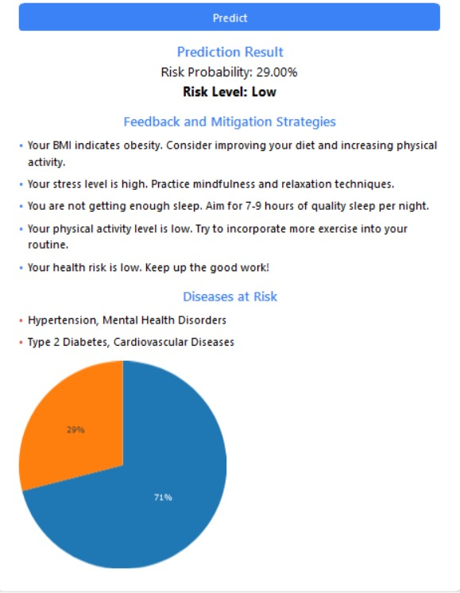

FitLife360 Health Risk Prediction
This web application predicts individual health risks based on biometric and lifestyle data. I personally developed the machine learning pipeline, Flask backend, and frontend dashboard with Plotly and CSS. All code, data preprocessing, model evaluation, and UI were handled by me.
📅 Sprint Summary Table
| Sprint | Objective |
|---|---|
| 1 | Data cleanup, BMI computation, preprocessing |
| 2 | Trained ML models (RF, LR, GB) |
| 3 | Built Flask API routes and predictors |
| 4 | Dashboard + charts using Plotly |
| 5 | Feedback engine & health insights |
📌 User Stories & Tasks
- As a user, I want to enter my health data and receive a risk assessment.
- As a user, I want personalized suggestions to improve health risk factors.
- As the developer, I built the entire backend logic, ML integration, and UI workflow.
- Tasks not done by me (none for this project) would be listed clearly here.
📊 Dashboard View

🧠 Prediction Form

🧾 Contribution Evidence
- Public repo: GitHub Repository
- All code authored and committed by me. Full commit history is traceable.
- Screenshots above reflect functional portions I implemented personally.